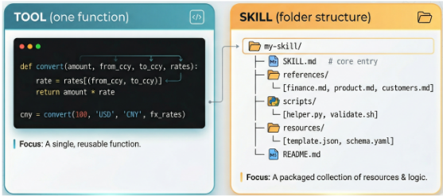
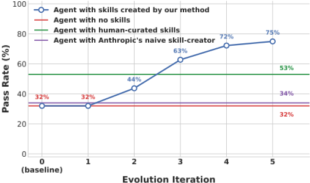
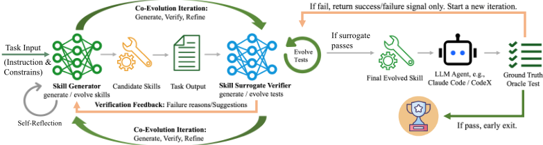
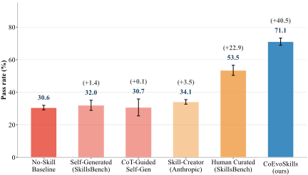
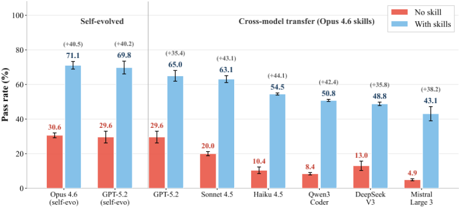
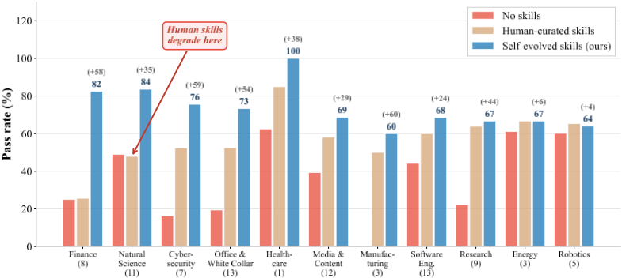
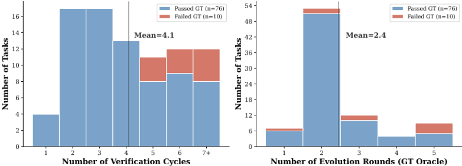

CoEvoSkills：基于协同进化验证的 Agent 技能自进化
Anthropic 提出的 Agent Skills（由工作流指令、可执行脚本与领域参考资料组成的多文件结构化包）能显著提升 Agent 完成多步专业任务的能力，但人工编写成本高、质量不均，且存在人机认知错位——为人类专家设计的流程未必匹配 LLM 的推理与执行方式。论文提出 CoEvoSkills：Skill Generator 在持久对话上下文中迭代生成并修正多文件技能包；一个信息隔离的 Surrogate Verifier 独立合成确定性测试断言并输出结构化失败诊断；两者协同进化，ground-truth oracle 仅返回不透明的通过/失败信号以防对隐藏测试过拟合。在 SkillsBench 85 个任务上达到 71.1% 通过率，较无技能基线 +40.5pp、较人工策划技能 +17.6pp，且进化出的技能可迁移到 6 个其他模型（+35~44pp）。核心结论：收益来自协同验证循环而非提示本身，Agent 自进化技能可超越人工技能并跨模型移植。
Agent Skills 依赖人工编写，劳动密集、难以规模化且质量无系统保证；SkillsBench 评估显示人工技能收益高度不均，某些领域（如 Natural Science）接入后性能反而下降，根源是 human-machine cognitive misalignment。已有自进化方法存在 tool-skill gap：面向单文件、一次性生成的简单工具函数，无法构建协调多 artifacts 的多文件技能包；且多依赖 ground-truth 信号做失败诊断（如 EvoSkill），真实场景中此类监督不可得。同时，一次性生成多文件技能包本身不可靠，自进化过程中 Agent 又缺乏 ground-truth 反馈。
CoEvoSkills 将任务环境建模为 POMDP，通过三个信息隔离组件的 generate-verify-refine 协同进化循环求解：(1) Skill Generator：以任务指令 I、任务相关背景知识 B 和领域无关 metaskill（skill-creator）初始化持久对话上下文 C，迭代生成/修正含 SKILL.md 与可执行脚本的多文件技能包，依据 verifier 诊断做针对性修复，并设上下文占比上限 β=0.7 防止溢出；(2) Surrogate Verifier：独立 LLM 会话，仅可见指令、可观测输入与产出 artifacts（不可见生成器推理、技能源码与隐藏标准），合成确定性测试断言套件并给出逐断言失败诊断（根因分析+修改建议）；当代理测试通过但 oracle 失败时，仅收到不透明 pass/fail 位，据此独立升级测试（test escalation）；(3) Ground-Truth Oracle：在全新环境中独立重执行技能，返回二元信号作为最终仲裁。预算 K=5 轮 oracle、M=15 次修复重试，保留最优技能快照部署到目标 Agent（Claude Code、Codex）。
SkillsBench 85 个任务上，CoEvoSkills 通过率 71.1%，较无技能基线（30.6%）+40.5pp，较人工策划技能（53.5%）+17.6pp，超过全部五个基线
Skill-Creator 基线仅 34.1%；一次性自生成技能 32.0%（±3.1）；CoT 引导自生成 30.7%（±5.2），均与无技能基线相当，说明收益来自验证循环而非生成提示
GPT-5.2 作为进化骨干同样 +40.2pp；其自进化技能 69.8% 优于 Opus 迁移技能 65.0%（+4.8pp，模型匹配进化有稳定但有限的优势）
Opus 进化的技能迁移到 6 个额外模型（GPT-5.2、Claude Sonnet 4.5、Claude Haiku 4.5、Qwen3-Coder-480B、DeepSeek V3-671B、Mistral Large 3-675B），较各自无技能基线提升约 35-44pp
11 个领域中 9 个超越人工策划技能，Finance +56.9pp、Cybersecurity +23.2pp；Natural Science 上人工技能降级而自进化技能大幅提升
进化动态：第 2 轮 44%，第 3 轮 63% 超过人工技能，第 5 轮收敛至 75%；平均每任务 4.1 次验证循环、2.4 次 oracle 轮，约 40% 迭代由 surrogate 单独解决，超过 60% 任务在 2 次 oracle 轮内收敛
消融：移除 Surrogate Verifier 后通过率从 71.1% 降至 41.1%（-30.0pp）；仅背景知识上下文即可从 30.6% 提升至 42.4%
案例研究：系外行星任务经 4 个版本收敛（oracle 75%→75%→100%）；进化技能为 64 行文档+142 行 Python（对应人工技能共 1,096 行），预装给无进化上下文的全新 Agent 后 5 次独立试验 100% 通过
相对已有工作的三点区别：(1) 首个面向结构化多文件技能包（而非单文件工具函数或 prompt 级启发式）的自进化框架，弥合 tool-skill gap——SAGE 产出单文件函数、SkillRL 产出 prompt 级启发式、AutoSkill/AutoRefine 产出 prompt 模板、SEAgent 内化到权重不可检视；(2) 通过生成器-验证器协同进化与严格信息隔离，在不依赖 ground-truth 答案或 held-out 验证性能的条件下实现可靠进化（对比 EvoSkill 依赖 ground-truth 诊断与验证集选择）；(3) 实证揭示人机认知错位：Agent 自进化技能在 9/11 领域超越人工策划技能，且技能编码的是可复用任务结构而非模型特定产物，可跨模型家族迁移。
相关度级别：high
命中能力域：3.3 Agent 架构与工具使用 | 3.5 评测与可靠使用 | 3.1 上下文工程与记忆
理由：直接命中团队两个核心能力域：对 3.3，论文完整围绕 Anthropic Agent Skills 技能系统展开（skill-creator metaskill、SKILL.md+scripts 结构、Claude Code/Codex harness），并给出单 Agent 执行可靠性的具体提升机制；对 3.5，其 Surrogate Verifier + 不透明 oracle 的双层验证架构、信息隔离防过拟合设计、以及基于确定性验证器的评测方法，正是团队'产出质量与可靠性评测保障'的可直接借鉴范式。对 3.1 亦有实质关联：持久对话上下文累积反馈、上下文占比上限 β=0.7、以及'背景知识作为进化底座'的消融（30.6%→42.4%）都是上下文组织的实证证据。论文还给出对团队提示工程实践的反向启示：CoT 引导的提示本身几乎无增益（30.7% vs 30.6%），收益来自验证循环。
建议动作：深入精读并做内部分享
arXiv:2604.01687v3 [cs.AI] 10 Aug 2026
CoEvoSkills：通过协同进化验证实现自进化的 Agent 技能
Hanrong Zhang 1 ∗ Shicheng Fan 1 ∗ Henry Peng Zou 1 Yankai Chen 2,3† Zhenting Wang 2 Jiayu Zhou 4 Chengze Li 1 Wei-Chieh Huang 1 Yifei Yao 5 Kening Zheng 1 Xue (Steve) Liu 2,3 Xiaoxiao Li 6 Philip S. Yu 1
1 伊利诺伊大学芝加哥分校 2 穆罕默德·本·扎耶德人工智能大学（MBZUAI） 3 麦吉尔大学 4 哥伦比亚大学 5 浙江大学 6 英属哥伦比亚大学 {hzhan135, psyu}@uic.edu xiaoxiao.li@ece.ubc.ca
Anthropic 针对 LLM Agent 提出了技能（skill）的概念，以应对简单工具调用无法处理的多步骤专业任务。工具是单一、自包含的函数，而技能则是由相互依赖的多文件工件构成的结构化捆绑包。目前，技能生成不仅因人工编写而属于标注密集型工作，还可能受到人机认知错位的影响，从而导致 Agent 性能下降，SkillsBench 基准测试上的评估结果也证实了这一点。因此，我们旨在使 Agent 能够自主生成技能。然而，现有针对工具设计的自进化方法由于技能复杂度的增加而无法直接应用于技能。为解决这些问题，我们提出了 CoEvoSkills——一个自进化技能框架，使 Agent 能够自主构建复杂的多文件技能包。具体而言，CoEvoSkills 将迭代精炼技能的 Skill Generator 与协同进化以提供信息丰富且可操作反馈的 Surrogate Verifier 相耦合，且后者无需访问真实测试内容（ground-truth test content）。在 SkillsBench 上，CoEvoSkills 在 Claude Code 和 Codex 上均优于五个基线方法，并在另外六个 LLM 上展现出很强的泛化能力。代码已公开于 https://github.com/Zhang-Henry/CoEvoSkills 。
大语言模型（LLM）智能体在推理、规划、记忆以及与人类和环境的交互方面取得了快速进展（Yao et al., 2023; Zhang et al., 2025; Luo et al., 2025; Zou et al., 2026a; Huang et al., 2026a; Wu et al., 2026; Zou et al., 2026b; Huang et al., 2026b; Min et al., 2026; 2025; Luo et al., 2026b; Li et al., 2026b; Luo et al., 2026a; Qiu et al., 2026b）。推动这一进展的关键因素之一是调用外部工具和 API 的能力（Schick et al., 2023; Qin et al., 2024; Patil et al., 2024）。然而，专业性的开放式任务，例如复杂软件修复、多步骤科学分析以及企业数据流水线编排，所需要的远不止孤立的工具调用。智能体必须在多个步骤和产物之间编排出连贯的流程：分解目标、协调工具、从失败中恢复，并验证中间输出。这极具挑战性，因为决策具有长时程特性，指令与脚本紧密耦合，且可靠的环境反馈往往稀疏或滞后。
为了弥合这一差距，Anthropic 提出了智能体技能（agent skills）的概念（Anthropic, 2025c）。图 1 展示了工具与技能之间的区别：工具通常只是一个简单的函数，而技能则是一个结构化的包，其中包含工作流指令、可执行脚本和领域参考资料（Xu & Yan, 2026）。根据 SkillsBench（Li et al., 2026c）中给出的系统性评估，为智能体配备精心制作的技能，能够在包括软件工程和科学分析等在内的广泛专业领域带来一致的性能提升，这证实了结构化的流程性指导能够大幅增强任务求解能力，超越了单纯工具访问所能提供的水平。
∗ 同等贡献。
† 通讯作者：yankaichen@acm.org
尽管技能已被证明具有实用价值，但当前的主流范式几乎完全依赖人工编写，这一过程既耗费人力又难以规模化，且无法系统性地保证输出质量。如图 6 所示，SkillsBench 评估（Li et al., 2026c）揭示，人工策划的技能所带来的收益极不均衡：某些领域获益显著，而另一些领域（如自然科学）在集成技能后甚至出现性能下降。我们假设，这种不一致性的一个关键驱动因素是人机认知错位（human-machine cognitive misalignment）：为人类专家的直觉而设计的工作流和抽象，并不能自然地匹配 LLM 智能体在执行约束下处理上下文、进行推理并采取行动的方式。
为了减少人工投入，近期的方法已从预先定义静态工具或 API，转向由大语言模型（LLM）智能体自身对工具或工具库进行自进化（Chen et al., 2026; Li et al., 2026a; Lu et al., 2026; Wang et al., 2024; Xia et al., 2025）。然而，这些方法存在一个根本性的工具-技能鸿沟（tool-skill gap）：它们本质上是为一次性生成简单的、自包含的

函数而设计的，因而不足以创建那种在多个产物之间协调工作流指令、可执行脚本和领域参考资料的结构化多文件技能包。此外，EvoSkill 为失败诊断提供真值答案，并使用留出验证集的性能进行技能选择（Alzubi et al., 2026），这限制了其在缺乏此类监督的现实场景中的适用性。
为了应对这些挑战，我们提出了一个自进化技能框架 CoEvoSkills。为了克服一次性多文件技能生成固有的不可靠性，我们设计了一个主要组件 Skill Generator，用于迭代地生成和改进技能包，使技能质量在各进化轮次中稳步提升，如图 2 所示。它还维护一个持久化的对话上下文，在多次迭代中累积来自另一个主要组件 Surrogate Verifier 的高保真反馈。Surrogate Verifier 是一个独立的 LLM 会话，不会继承

生成器的偏差，旨在解决现实世界中缺乏真值反馈的问题。它根据任务指令、可观察的任务输入以及生成的输出产物来合成测试，提供驱动技能协同进化的高保真反馈。
综上所述，我们的主要贡献如下：❶ 我们提出了 CoEvoSkills，这是一个供 LLM 智能体自进化鲁棒多文件技能包的协同进化框架。❷ 我们展示了关于自主技能生成的关键洞见：(i) 智能体通过捕捉其真正需要的推理模式和工具调用策略，能够创造出优于人工策划技能的技能；(ii) 自进化的技能可跨不同模型家族移植，因为进化得到的技能包编码的是可复用的任务结构，而非模型特定的产物。❸ 我们在 SkillsBench 上开展了大量实验，CoEvoSkills 取得了 71.1% 的最高通过率（较无技能基线提升 40.5 个百分点），大幅超越所有五个基线方法。此外，由单个前沿 LLM 进化得到的技能能够有效迁移到来自五家公司的另外六个 LLM 上，相比它们各自的无技能基线带来约 35-44 个百分点的提升。
LLM Agent 技能。Anthropic 提出了 Agent Skills (Anthropic, 2025c)，如图 1 所示。近期的一项系统化梳理工作 (Jiang et al., 2026) 进一步将技能与原子工具和一次性计划区分开来，将其定义为具有明确适用条件和终止条件的可复用模块。SkillsBench (Li et al., 2026c) 提供了一个系统化的基准测试（benchmark），借助确定性任务验证器在多样化的专业领域中评估可复用的 Agent 技能。若干基于学习的方法试图弥合这一差距。SAGE (Wang et al., 2026) 在相关任务链上训练 Agent 并采用技能集成奖励，但所得技能仍是单文件的程序化函数，而非结构化的多文件技能包。SkillRL (Xia et al., 2026) 通过强化学习将轨迹蒸馏为层次化的技能库，但其依赖教师引导的蒸馏，且产出的是提示层面的启发式规则而非可执行产物。CoEvoSkills 则生成结构化的多文件技能包，并通过迭代验证对其进行进化。
自进化 LLM Agent。大量工作致力于将 Agent 能力的自我改进自动化，但现有方法存在两个反复出现的不足。首先，大多数自进化流程只能产出单个工具或函数 API，或仅产出提示层面的启发式规则 (Wang et al., 2024; Li et al., 2026a; Xia et al., 2025; Lu et al., 2026; Chen et al., 2026)，且无一能够构建完整技能包所需的多文件结构。此外，AutoSkill (Yang et al., 2026) 和 AutoRefine (Qiu et al., 2026a) 将可复用知识提取为提示模板而非可执行技能包，而 SEAgent (Sun et al., 2025) 则将能力内化到模型权重中，使其不可审查且不可迁移 (Jiang et al., 2026)。其次，一些方法严重依赖真值信号进行失败诊断，当此类监督不可用时其适用性受限 (Alzubi et al., 2026; Sun et al., 2025)。CoEvoSkills 通过隔离的代理验证对结构化多文件技能包进行进化，在无真值信号的情况下即可得到可操作的诊断，从而同时解决了上述两个局限。
为回答第 1 节提出的研究问题，必须克服两个核心困难：（1）单次生成多文件技能包本质上不可靠；（2）智能体在自我进化过程中缺乏真值反馈。CoEvoSkills 通过对智能体的技能与相应的代理验证器（Surrogate Verifier）进行协同进化，同时应对这两个挑战。图 3 展示了整体框架，算法 1 形式化了完整的协同进化流程。给定任务输入后，技能生成器（Skill Generator）生成候选技能并执行它们以获得任务输出。随后，信息隔离的代理验证器针对这些输出独立地生成并进化测试断言，并将结构化的失败诊断反馈给生成器。这两个组件通过迭代的生成-验证-精炼（generate-verify-refine）循环实现协同进化：每当代理测试通过时，真值 oracle 测试便会在全新环境中重新执行该技能，并仅返回一个不透明的成功/失败信号。如果 oracle 测试通过，最终进化得到的技能将被部署到目标大语言模型（LLM）智能体（例如 Claude Code (Anthropic, 2025a) 和 Codex (OpenAI, 2025a)）；否则，该信号会触发新一轮协同进化迭代，在此过程中验证器会升级其测试，生成器则相应地精炼技能。接下来，我们将在第 3.2 节和第 3.3 节中对 CoEvoSkills 进行形式化。

Task Definition. Since the LLM agent never knows what the held-out ground-truth tests actually check, i.e., the success criteria remain entirely hidden, we define the task environment as a POMDP M = ⟨X , A , T , O , Ω , R⟩ . Here, X is the underlying state space, i.e., the complete filesystem and processes, A comprises the agent's actions, i.e., terminal commands and file edits, T ( x ′ | x , a ) is the deterministic state transition upon executing action a in state x and reaching successor state x ′ , O is the observation space, i.e., command execution results, Ω ( o | x , a ) maps post-action states to partial observations, and yH denotes the output artifacts contained in terminal state xH , while R ( yH ) ∈ [ 0, 1 ] evaluates those artifacts against hidden ground-truth tests. Because the agent only receives partial observations ot ∼ Ω ( · | xt , at ) , it acts based on the observation-action history ht = ( o 1 , a 1 , . . . , at - 1 , ot ) .
Optimization Objective. Unlike atomic tools that offer simple functional interfaces, a skill S (Anthropic, 2025c) is a structured bundle of domain-specific instructions, executable scripts, and reference materials that collectively guide an agent in navigating a task space. The skill conditions the agent's policy:
where πθ is an LLM policy. We define the expected terminal reward under skill S as:
where H is the terminal horizon and τ = ( o 1 , a 1 , . . . , aH - 1 , oH ) is the execution trajectory. Our objective is to discover an optimal skill S ∗ that maximizes J :
然而，直接优化 J(S)（式 3）是难以处理的：真值评估的计算代价高昂，且仅返回一个不透明的通过/失败信号；不会向 Agent 揭示任何测试内容或失败细节。为了提供密集且可操作的反馈，我们引入替代验证器奖励 ˜R(y, V)，该奖励由独立验证器生成的一组确定性测试断言 V = { e 1 , . . . , e |V| } 所定义。
算法 1 CoEvoSkills 协同进化算法
输入：指令 I、可观测任务输入 D、背景知识 B、环境 E、元技能 S meta（skill-creator）
输入：真值 oracle 轮数 K = 5，替代修复重试次数 M = 15，上下文上限 β = 0.7
输入：大语言模型（LLM）策略 πθ（生成器），独立验证器策略 π V θ
输出：最终演化技能 S ∗
1: C ← ( I , B , S meta ) // 输入：指令 I、背景知识 B、元技能；输出：初始上下文 C
2: S ( 0 ) ∼ πθ ( · | C ) // 输入：上下文 C；输出：技能包 S ( 0 )（代码 + SKILL.md）
3: V ( 0 ) ←⊥ // 未初始化的替代验证器测试套件
4: i ← 0; j ← 0; n ← 0; r ← 0 // 技能版本；测试版本；oracle 轮数；修复重试次数
5: R best ← 0; S ∗ ←S ( 0 ) // R best：迄今为止的最佳 oracle 得分
6: while n < K and r < M do
7: // - 技能生成器：执行并产生输出 -
8: y ( i ) ← Φ ( S ( i ) , E ) // Φ：在环境中执行技能并收集输出；输出：产物 y ( i )
9: if LLM 上下文使用比例 > β then
10: break // 防止 LLM 上下文溢出
11: end if
12: if j = 0 and V ( 0 ) = ⊥ then
13: V ( 0 ) ∼ π V θ ( · | I , D , y ( i ) ) // 由指令、可观测输入和产物初始化测试
14: end if
15: // - 替代验证器：评估与改进（式 4、式 5）-
16: ˜ R ( i , j ) ← ˜ R ( y ( i ) , V ( j ) ) // ˜ R：替代奖励；输入：产物、测试；输出：通过率 ∈ [ 0, 1 ]
17: if ˜ R ( i , j ) < 1 then
18: F ( i , j ) ∼ π V θ ( · | I , D , y ( i ) , V ( j ) ) // 输入：I、输入 D、产物 y ( i )、测试 V ( j )；输出：诊断信息 F
19: C ← C ⊕F ( i , j ) // 将错误诊断 F 追加到生成器上下文 C
20: S ( i + 1 ) ∼ πθ ( · | S ( i ) , C ) // 技能改进（式 7）
21: i ← i + 1; r ← r + 1; continue // 演化 S；V ( j ) 保持锁定
22: end if
23: // - 真值 Oracle 测试：在全新环境中独立重新执行 -
24: ˆ y ( i ) ← Φ ( S ( i ) , E ′ ) // 输入：技能 S ( i )、全新环境 E ′；输出：产物 ˆ y ( i )
25: R ( i ) ←R ( ˆ y ( i ) ) ; n ← n + 1 // R：真值 oracle 奖励；输出：得分 ∈ [ 0, 1 ]
26: if R ( i ) = 1 then
27: S ∗ ←S ( i ) ; return S ∗ // 提前退出：满分
28: else if R ( i ) > R best then
29: R best ←R ( i ) ; S ∗ ←S ( i ) // 保存最佳快照
30: end if
31: // - 协同进化：测试升级（式 6、式 8）-
32: C ← C ⊕ 1 [ R ( i ) < 1 ] // 1 [ · ]：指示函数；将 oracle 通过/失败位追加到 C（不含测试内容）
33: V ( j + 1 ) ∼ π V θ ( · | I , D , y ( i ) , V ( j ) ) // 验证器升级（式 8）
34: j ← j + 1 // V 演化；S ( i ) 将在下一轮迭代中重新评估
35: end while
36: return S ∗ // 保存最佳技能
其中 y 表示技能执行所产生的输出产物，1[e_k(y)] 指示断言 e_k 在这些输出上是否通过。然而，该替代奖励只有在忠实逼近隐藏的 R 时才有用。这构成了一个耦合的优化问题：技能必须最大化一个代理指标，而该代理指标本身又必须与隐藏的真值（ground truth）保持一致。由于真值（GT）oracle 测试仅揭示一个二值通过/失败信号 1[R(ˆy^(i)) < 1]（其中 ˆy^(i) 表示 oracle 独立重新执行的输出），且不提供任何测试内容，我们无法直接针对 R 进行优化。相反，令 I 表示任务指令，我们将 rollout 算子 Φ(S, E) 定义为在环境 E 中对 π_θ(·|h_t, S) 进行 rollout 所得到的执行输出，于是 y^(i) = Φ(S^(i), E) 为第 i 个技能版本的输出，而 ˆy^(i) = Φ(S^(i), E′) 为在全新环境 E′ 中由独立 oracle 重新执行所产生的输出。V^(j) 是替代验证器测试套件的第 j 个版本。我们用 D 表示技能演化期间可用的所有输入，包括实例数据和背景文档 B（B ⊆ D）；D 不包含任何隐藏的 oracle 信息。CoEvoSkills 通过交替精化推进：
在实践中，式 5 中的 arg max 通过迭代的大语言模型（LLM）采样（式 7）来近似。技能精化在固定的验证器测试套件 V^(j) 下最大化 ˜R；只有当 oracle 的二值信号暴露出 ˜R 与 R 之间的差距时，才会触发测试升级，从而迫使验证器在完全无法访问真值测试内容的情况下独立地强化其测试。CoEvoSkills 通过三个在信息上相互隔离的组件来实现这种交替优化：在协同进化循环（算法 1）中编排的技能生成器（Skill Generator）与替代验证器（Surrogate Verifier）。
技能生成器。单次技能生成往往会产生带有覆盖缺口和逻辑错误的技能包，因为 Agent 在生成过程中缺乏真值反馈。为了实现迭代精化，技能生成器维护一个持久的对话上下文 C。我们研究 Agent 驱动的技能演化（agent-driven skill evolution），其中生成器在初始化时即拥有任务相关的背景知识，例如组织文档或领域参考资料。因此，C^(0) = (I, B, S_meta)，其中 I 为任务指令，B 表示上述任务相关背景知识，S_meta 是一个与领域无关的元技能（skill-creator），用于教授如何创建技能。在每次修订时，LLM π_θ（式 1）利用累积的替代验证器诊断信息更新当前技能 S^(i)：
其中，S ( i ) 为第 i 个技能版本，F ( i , j ) 为替代验证器（Surrogate Verifier）在测试套件 V ( j ) 下评估 S ( i ) 之后给出的失败诊断，包含失败的测试用例、根因分析以及可操作的修改建议，而 ⊕ 表示将详细反馈追加到大语言模型（LLM）上下文中。Agent 通过 rollout y ( i ) = Φ ( S ( i ) , E ) 执行 S ( i )（第 8 行），所得输出随后被传递给替代验证器进行评估。
替代验证器。由于真值奖励 R 仅返回一个不透明的通过/失败信号，技能生成器（Skill Generator）缺乏用于诊断和纠正错误的密集反馈。替代验证器通过充当 R 的代理来弥补这一空缺，提供不透明 oracle 所无法给出的逐断言失败诊断。为了减少确认偏误，替代验证器使用一个独立的 LLM 会话 π V θ ，且仅接收 I 、D（包括 B ）、y ( i ) 和 V ( j ) 。它无法访问生成器的推理过程或技能源代码，也无法访问隐藏的 oracle 判定标准、测试内容或诊断信息，同时仍能够构建以输入为依据的测试。该验证器生成由确定性断言构成的代理验证器测试套件 V = { e 1 , . . . , e |V| }，由此得到式 4 中定义的代理奖励 ˜ R ( y , V ) 。在首次 rollout 之后，它会先根据 ( I , D , y ( 0 ) ) 初始化 V ( 0 ) ，再计算首个替代奖励（算法 1，第 12-16 行）。随后，它通过读取先前的测试脚本 V ( j ) 和当前输出 y ( i ) 来迭代地改进该验证器测试套件：
其中，验证器以任务指令 I 、可观测的任务输入 D 、Agent 的当前输出 y ( i ) 及其自身的先前测试脚本 V ( j ) 为条件，生成改进后的验证器测试套件 V ( j + 1 ) 。当替代奖励指示失败（˜ R < 1）时，验证器还会额外生成结构化的失败诊断 F ( i , j ) ∼ π V θ ( · | I , D , y ( i ) , V ( j ) ) ，其中包括逐断言结果、根因分析以及反馈给技能生成器的可操作修改建议（式 7）。
技能生成器与替代验证器的协同演化。式 5-式 6 中的交替优化将两条反馈通路耦合在一起（算法 1）。当替代奖励指示失败（˜ R < 1）时，验证器测试套件 V 保持固定，由失败诊断 F 驱动技能修订（式 7）。当替代测试通过但真值 oracle 失败时，仅返回一个不透明的通过/失败比特，即不提供任何测试内容或失败细节，以防止技能生成器对留出测试产生过拟合。此时，替代验证器必须根据可观测的任务输入和当前输出产物，独立地升级其测试套件（式 8）。例如，它可以生成更加多样、全面且更具挑战性的测试用例。通过这种双重反馈机制，技能 S 在替代测试压力下不断改进。图 2 证实了在少数几次协同演化迭代内即可收敛。
在本节中，我们回答三个研究问题（RQs）：(1) 自演化技能是否有用，能否超越人工策划的技能（第 4.2 节）？(2) 演化得到的技能能否跨模型和 Agent 框架进行迁移（第 4.3 节）？(3) 性能提升在各专业领域之间如何分布（第 4.4 节）？组件消融实验见附录 A。
我们在 SkillsBench（Li et al., 2026c）上评估 CoEvoSkills。我们的实验涵盖 85 个任务，对技能增强型任务在真实世界中的分布提供了广泛的覆盖。每个任务均配有一个确定性验证器（verifier），从而实现可复现的、二元的通过/失败评估，无需主观的人工判断。我们采用 SkillsBench 作为唯一的评估套件，因为据我们所知，它是唯一一个专门为评估 Agent 技能效用而构建的基准测试（benchmark）。主要指标为通过率（pass rate）：即 reward = 1.0 的任务所占比例，reward = 1.0 表示所有测试均通过，否则 reward = 0.0。除非另有说明，所有条件均使用相同的指令格式。对于预装了技能的条件，任务指令中会注明这些技能可用。
我们将五个基线与 CoEvoSkills 进行比较。No-Skill Baseline 评估在没有可用技能时 Agent 的性能。Self-Generated Skills 复现了 SkillsBench（Li et al., 2026c）中的单次（one-pass）自生成条件：Agent 在求解任务前以单次生成的方式生成一至五份技能文档，不进行迭代演化或验证（提示词见第 D.4 节）。CoT-Guided Self-Generation 在 Self-Generated Skills 条件的基础上，增加了结构化的五步思维链（chain-of-thought, CoT）提示词（提示词见第 D.5 节）。Skill-Creator 采用 Anthropic 官方的 skill-creator（Anthropic, 2025c）。由于我们的评估

是完全自主的，我们用自主的等价步骤替换了其中的人工交互步骤（见第 D.3 节）：第一个会话迭代地起草、自测并改进技能，至少进行三次迭代；第二个会话使用所得技能求解任务。Human Curated Skills 预装了随 SkillsBench 一同发布的人工编写的技能包。对于演化 Agent，我们使用 Claude Opus 4.6 和 GPT-5.2 作为骨干模型。每次演化运行在初始化时仅有通用背景知识 B 可用，不包含任务实例的求解过程或隐藏的 oracle 信息。在基线比较中，每种主要方法均在 5 次独立运行上进行评估，并报告均值 ± 标准差。
7
此外，我们还评估了由 Claude Opus 4.6 演化得到的技能在另外六个模型上的可迁移性：GPT-5.2（OpenAI, 2025b）、Claude Sonnet 4.5（Anthropic, 2025d）、Claude Haiku 4.5（Anthropic, 2025b）、Qwen3-Coder-480B（Yang et al., 2025）、DeepSeek V3-671B（DeepSeek-AI et al., 2024）以及 Mistral Large 3-675B（Mistral AI, 2025）。每个模型均在 3 次独立运行上进行评估。
| Component | Setting |
|---|---|
| Backbones Surrogate verifier model Ground-truth oracle test agent Evolution stage Evolution runtime Evaluation stage | Claude Opus 4.6, GPT-5.2 Same as evolution backbone (Claude Opus 4.6 / GPT-5.2) Claude-Code (Claude Opus 4.6) / Codex (GPT-5.2) K = 5 Ground Truth Oracle rounds, M = 15 surrogate repair retries timeout multiplier 5 × (effective 3000s/task), 4 parallel workers timeout 7200s/task, 10 parallel workers |
| Component | Setting |
| Model | Agent harness |
|---|---|
| Claude Opus 4.6 GPT-5.2 Claude Sonnet 4.5 Claude Haiku 4.5 Qwen3 Coder DeepSeek V3 Mistral Large 3 | Claude-Code (Anthropic, 2025a) Codex (OpenAI, 2025a) Claude-Code (Anthropic, 2025a) Terminus-2 (Merrill et al., 2026) Terminus-2 (Merrill et al., 2026) Terminus-2 (Merrill et al., 2026) Terminus-2 (Merrill et al., 2026) |
| Model | Agent harness |
Fig. 4 presents the core comparison on Claude Opus 4.6 with Claude-Code. CoEvoSkills reaches a 71.1% pass rate, exceeding the no-skill baseline (30.6%) by + 40.5pp and humancurated skills (53.5%) by + 17.6pp. The Skill-Creator baseline achieves only 34.1%, barely above the no-skill baseline. Two in-session self-generation baselines perform no better: the SkillsBench self-generated skills baseline (Li et al., 2026c) reaches 32.0% ( ± 3.1), and a CoTguided variant that follows a structured five-step chain-of-thought prompt reaches 30.7% ( ± 5.2), both providing negligible improvement over the no-skill baseline. This confirms that skill generation without co-evolutionary verification is insufficient regardless of the generation strategy: the gains of CoEvoSkills originate from the iterative verification loop, not from the skill-creation prompt itself. We summarize the main insight as follows.
自进化技能之所以优于人工策划的技能，是因为它们编码了 Agent 原生的推理模式、工具调用偏好和分解策略，而非遵循人类关于 Agent 应如何运作的假设。
在确认 CoEvoSkills 能够在两个主要的大语言模型（LLM）上生成高质量技能之后，我们接下来考察这些技能能否在不同 LLM 模型家族之间泛化。如图 5 所示，自进化技能在两个主要骨干模型上均带来了大幅提升：Claude Opus 4.6（+40.5pp）和 GPT-5.2（+40.2pp）。将 Opus 进化得到的技能迁移到另外六个模型上，各模型获得的提升约为 35-44 个百分点，这表明蒸馏出的工作流并不绑定于产生它们的原始模型。精确的通过率见表 3。

| Model | With skills | No skill | ∆ |
|---|---|---|---|
| Self-Evolved Skills | |||
| Claude Opus 4.6 (self-evolved) | 71.1 | 30.6 | +40.5 |
| GPT-5.2 (self-evolved) | 69.8 | 29.6 | +40.2 |
| Cross-Model Transfer (Opus 4.6 Evolved Skills) | Cross-Model Transfer (Opus 4.6 Evolved Skills) | Cross-Model Transfer (Opus 4.6 Evolved Skills) | Cross-Model Transfer (Opus 4.6 Evolved Skills) |
| GPT-5.2 | 65.0 | 29.6 | +35.4 |
| Claude Sonnet 4.5 | 63.1 | 20.0 | +43.1 |
| Claude Haiku 4.5 | 54.5 | 10.4 | +44.1 |
| Qwen3 Coder | 50.8 | 8.4 | +42.4 |
| DeepSeek V3 | 48.8 | 13.0 | +35.8 |
| Mistral Large 3 | 43.1 | 4.9 | +38.2 |
| Model | With skills | No skill | ∆ |
有趣的是，GPT-5.2 也能从 Opus 迁移而来的技能中获益（65.0%），但其自身的自进化技能（69.8%）仍比迁移技能集高出 4.8pp，这表明模型匹配的进化具有小幅但一致的优势。我们将主要结论总结如下。
自进化技能编码的是可复用的任务结构，而非模型特定的产物，因此即使没有模型匹配的进化，也能实现广泛的跨模型可迁移性。
除总体指标外，图 6 还揭示了性能提升在各领域间的分布情况。自进化技能在 11 个领域中的 9 个领域上优于人工精选技能，其中在金融领域领先幅度最大（较人工精选高 +56.9pp），其次是网络安全领域（+23.2pp）。这一模式并不均匀：在人工精选技能已表现良好的领域（能源、机器人），进化带来的收益递减；而在人工精选收益甚微的领域，进化带来的提升最大。我们将主要结论总结如下。
9

人工精选技能在某些领域可能会主动降低智能体的性能；协同进化优化通过发现与 LLM 智能体实际推理方式相契合的流程，弥合了这一差距。
图 2 追踪了各演化轮次中的通过率，并与三个静态基线进行对比：无技能基线（30.6%）、Anthropic 的朴素 skill-creator（34.1%）以及人工精选技能（53.5%）。在第 0 轮（无验证的一次性生成）时，CoEvoSkills 的表现与无技能基线相当，但一旦开始迭代验证，通过率便急剧攀升，在第 2 轮达到 44%，在第 3 轮（63%）超越人工精选技能，并在第 5 轮收敛至 75%。这证实了协同进化循环（而非生成提示）才是技能质量的主要驱动因素，同时五轮内的收敛使演化成本保持在实用水平。附录 B 给出了所有任务上验证循环与 oracle 轮次的完整分布：每个任务平均需要 4.1 个验证循环和 2.4 轮 Ground Truth Oracle 才能达到收敛。此外，附录 C 呈现了一条代表性演化轨迹的详细记录。
我们提出了 CoEvoSkills，一个用于 Agent 技能自生成的协同进化框架。该设计同时克服了一次性（one-shot）技能生成的不可靠性以及真实场景中缺乏 ground-truth 反馈的问题。在 SkillsBench 上，CoEvoSkills 大幅超越人工精选技能和所有自生成基线方法，同时展现出很强的可迁移性。我们的实验揭示了一种人机认知错位，而协同进化优化能够弥合这一错位。然而，CoEvoSkills 是从初始化时可获得的与任务相关的背景知识中演化技能。一个自然的扩展方向是开放世界（open-world）技能演化，即 Agent 在初始任务上下文之外自主寻找并验证额外知识。例如，OpenSkill 研究了这一更广泛的设定，其通过从开放世界资源中自举（bootstrapping）可迁移技能与验证信号，而无需目标任务监督（Yan et al., 2026）。将 CoEvoSkills 扩展到这一范式是一个富有前景的下一步方向。
表 A1 总结了消融实验结果。我们考察了代理验证器（surrogate verifier）、背景上下文以及演化过程的贡献。所有消融实验均使用 Claude Code，并以 Claude Opus 4.6 作为底层模型。
| Setting | Pass rate (%) | ∆ vs. Full |
|---|---|---|
| CoEvoSkills (Full framework) | 71.1 | - |
| W/Osurrogate verifier | 41.1 | - 30.0 |
| W/Oevolution (Context only) | 42.4 | - 28.7 |
| No-Skill Baseline | 30.6 | - 40.5 |
| Setting | Pass rate (%) | ∆ vs. Full |
四种设置如下：
消融分析。移除代理验证器后，通过率从 71.1% 降至 41.1%（-30.0pp）。生成器仍会进行最多 5 轮迭代的技能演化，但仅依赖 oracle 的不透明通过/失败信号。这表明，在缺乏能够识别具体失败原因的结构化诊断反馈时，生成器无法进行针对性修复，从而导致演化效率低下。
初始上下文作为演化基底。真实世界的 Agent 很少从空上下文开始：它们通常在初始化时便可使用组织文档、领域参考资料或用户与工作区特定的知识。因此，我们在保持 heldout oracle 判据不可访问的前提下，利用这些背景知识来初始化 Agent 驱动的技能演化。仅凭背景上下文即可将通过率从 30.6% 提升至 42.4%，而完整的 CoEvoSkills 进一步达到 71.1%。这表明上下文提供了有用的基底，而协同演化则将其转化为结构化、经过验证且可执行的技能包。
图 B1 报告了 85 个演化任务中验证周期与 Ground Truth Oracle 轮次的分布。
任务排除。我们排除了两个任务，其所需的基础设施无法在我们的标准化执行环境中可靠地复现。scheduling-email-assistant 任务需要经过身份验证的 Google Calendar 和 Gmail API 以及可变的外部状态，而默认的 mhc-layer-impl 配置则需要支持 CUDA 的 GPU 和 5,000 步的 PyTorch 训练。这些排除反映的是基础设施可用性，而非模型表现。左图显示了每个任务的验证周期总数，涵盖演化循环期间的所有宿主干预：Surrogate Verifier 失败（此时 agent 会被退回以修复问题）、surrogate 通过后随之进行的 Ground Truth Oracle 评估。每个任务在收敛前平均需要 4.1 个验证周期。
右图单独统计了 Ground Truth Oracle 轮次的数量，即验证周期的一个子集——在这些周期中，Surrogate Verifier 完全通过，并调用 Ground Truth Oracle 在干净、独立的执行中评估演化后的技能。超过 60% 的任务在 2 轮 Ground Truth Oracle 内收敛，平均值为 2.4。未能取得满分 Ground Truth Oracle 得分的 10 个任务集中在较高的迭代次数（5 个或更多验证周期），这表明需要多次迭代的任务也更难解决：演化循环在未收敛的情况下耗尽了其预算。
这一分布证实了 CoEvoSkills 框架的两个特性。第一，Surrogate Verifier 吸收了大部分迭代成本：在平均 4.1 个验证周期中，仅有 2.4 个会升级至 Ground Truth Oracle，这意味着约 40% 的迭代仅由 surrogate verifier 即可解决。第二，由 K = 5 的 oracle 轮次和 M = 15 的 surrogate 修复重试构成的演化预算对大多数任务而言已经足够，且在超过 3 轮 oracle 轮次后收益递减。
本附录详细记录了 CoEvoSkills 如何为系外行星凌星周期检测（Exoplanet Transit Period Detection）任务演化技能的完整轨迹。该任务要求 agent 从包含恒星变异性（自转调制）的凌星系外行星巡天卫星（Transiting Exoplanet Survey Satellite, TESS）光变曲线数据中检测系外行星轨道周期，并输出精确到小数点后 5 位的周期值。Ground Truth Oracle 测试套件包含 4 个确定性测试（周期准确性、格式、精度和混叠正确性），必须全部通过才能获得 reward = 1.0。
整个演化过程在 6 次 host 干预中经历了 4 次脚本重写，Ground Truth Oracle 得分依次为 75% → 75% → 100%。表 C1 总结了完整的演化轨迹，包括每一轮中 Surrogate Verifier 与 Ground Truth Oracle 的结果。
15

值得注意的是，在第 2 轮中，Surrogate Verifier 通过了全部 15 个测试，但系统并未进入 Ground Truth Oracle 评估，原因是 agent 的强制性进度清单尚未完成。该清单编码了我们认为构成一次规范演化迭代所必需的全部步骤（环境发现、技能创建、自我反思、任务执行和总结），编排器要求所有步骤都被标记为完成后，才会升级至 oracle。这一机制防止了对尚未经历完整演化流程的技能包过早消耗 oracle。
| Round | Exit condition | Surrogate Verifier | Ground Truth Oracle | Key event |
|---|---|---|---|---|
| 1 | Verifier fail | 0/15 (0%) | - | Initial skill has bugs |
| 2 | Checklist fail | 15/15 (100%) | - | Progress checklist incomplete |
| 3 | Verifier pass | 15/15 (100%) | 3/4 (75%) | Period precision insufficient |
| 4 | Verifier pass | 20/20 (100%) | 3/4 (75%) | Precision fixed, alias check fails |
| 5 | Verifier fail | 19/22 (86%) | - | Surrogate Verifier catches regression |
| 6 | Verifier pass | 22/22 (100%) | 4/4 (100%) | All tests pass |
| Round | Exit condition | Surrogate Verifier | Ground Truth Oracle | Key event |
版本 1：采用 biweight 去趋势的 BLS（Ground Truth Oracle：尚未评估）。agent 的首次尝试使用经典的箱式最小二乘（Box Least Squares, BLS）结合 biweight 去趋势。凌星持续时间搜索范围被设为 0.01 至 0.2 天，其中下限过小，导致周期图中因拟合类似微凌星的特征而产生噪声。Surrogate Verifier 捕获了格式和逻辑错误（0/15 个测试通过），agent 从未进入 Ground Truth Oracle 评估。
版本 2：采用更宽持续时间范围的优化 BLS（Ground Truth Oracle：75%）。agent 将凌星持续时间搜索范围扩大到 0.05 至 0.3 天（在物理上更合理），并添加了端到端的 find_transit_period() 流水线函数。Ground Truth Oracle 返回 3/4（75%）：检测到的周期接近真实值，但由于 BLS 网格分辨率过粗，缺乏 5 位小数的精度。
版本 3：中值滤波去趋势（Ground Truth Oracle：75%）。agent 将去趋势方法从 biweight 切换为中值滤波（对离群值更鲁棒），并将最大持续时间收紧至 0.15 天。Ground Truth Oracle 再次返回 3/4（75%）。精度问题依然存在：无论采用何种去趋势方法，BLS 网格分辨率似乎都不足以达到 5 位小数的精度。此时，agent 认识到仅在 BLS 内部进行增量式参数调整是不够的。
版本 4：采用两阶段精化的 TLS（Ground Truth Oracle：100%）。最终版本引入了四项改动：(a) 搜索算法从 BLS 切换为 Transit Least Squares（TLS），后者使用真实的临边昏暗凌星模型而非方波近似，从而产生更精确的周期估计；(b) 去趋势方法改为 Savitzky-Golay 滤波，后者能更好地保留凌星形状；(c) 增加了两个阶段的周期搜索，先进行宽范围扫描（0.5 至 15 天），再围绕候选值进行窄范围精化（±2%），以达到 5 位小数的精度；以及 (d) 增加了针对周期谐波（P/2、2P）的混叠检查，以避免错误的周期。Ground Truth Oracle 返回 4/4（100%）。
Surrogate 与 GT 之间的差距。该任务具体说明了为什么 Surrogate Verifier 无法取代 Ground Truth Oracle。在第 3 轮（表 C1）中，15 项 Surrogate Verifier 测试全部通过，但 Ground Truth Oracle 仅报告 3/4（75%）。Surrogate Verifier 在原始光变曲线（D 中的可观测任务输入）上独立运行了自己的 BLS 分析，并使用 1% 的容差进行周期匹配。然而，Ground Truth Oracle 测试要求精确到 5 位小数的匹配，这一精度阈值是 Surrogate Verifier 在无法访问隐藏测试代码的情况下无法推断出来的。
到第 5 轮时，Surrogate Verifier 已扩展至 22 项测试，并加入了 BLS 交叉验证。这带来了另一个问题：Surrogate Verifier 的 BLS 给出的周期为 3.24158 天，而 agent 的 TLS 给出 3.24156 天。Surrogate Verifier 将这一 0.00002 天的差异标记为失败，尽管 agent 的答案实际上更准确（TLS 使用了真实的凌星模型）。这说明代理验证存在两个结构性局限：(1) Surrogate Verifier 无法复现 Ground Truth Oracle 精确的精度要求；(2) 它无法将自身的估计误差与 agent 的误差区分开来。Ground Truth Oracle 作为权威仲裁者仍然是必不可少的。
演化总结。表 C2 总结了各版本的设计决策。agent 需要四个版本才得以收敛。关键洞察——即 BLS 在该任务上似乎无法达到 5 位小数的精度——是在经过两轮 75% 的 Ground Truth Oracle 反馈之后才浮现的。如果没有这些反馈，agent 将会无休止地继续调整 BLS 参数。
| Ver. | Detrending | Algorithm | Precision strategy | Ground Truth Oracle |
|---|---|---|---|---|
| V1 | Biweight | BLS | None | - |
| V2 | Biweight (opt.) | BLS | None | 75% |
| V3 | Median filter | BLS | None | 75% |
| V4 | Savitzky-Golay | TLS | Two-stage + alias | 100% |
| Ver. | Detrending | Algorithm | Precision strategy | Ground Truth Oracle |
表 C2：系外行星凌星检测任务的 Skill 版本。每一行记录了去趋势方法、搜索算法、精度策略以及 Ground Truth Oracle 的结果。
本案例研究展示了 CoEvoSkills 验证架构的三个特性。第一，Surrogate Verifier 能够及早捕获实现缺陷（第 1 轮：0/15），并检测重构引入的回归（第 5 轮：19/22），避免这些问题消耗 Ground Truth Oracle 预算。第二，Ground Truth Oracle 揭示了 Surrogate Verifier 的功能测试无法检测到的根本性算法局限（BLS 精度上限），因为 Surrogate Verifier 只检查输出格式和流水线正确性，而不对照隐藏的 ground truth 检查数值精度。第三，协同演化循环带来了方法上的质变：agent 从在固定算法内进行参数调优（版本 1-3）转变为彻底替换算法（版本 4），这一决策由反复出现的 75% Ground Truth Oracle 反馈所驱动。
17
人工策划技能与自演化技能的对比。对于该任务，SkillsBench 提供了 5 个人工策划的技能，共计 1,096 行文档。演化产生了 1 个统一技能，包含 64 行流程文档和 142 行可执行 Python 代码。表 C3 总结了结构上的差异。
| Aspect | Human-curated (5 skills) | Self-evolved (1 skill) |
|---|---|---|
| Total size | 1,096 lines across 5 SKILL.md | 64 lines SKILL.md + 142 lines Python |
| Executable code | None (documentation only) | 9 callable functions |
| Algorithm guidance | Lists BLS, TLS, Lomb-Scargle equally | Prescribes TLS with justification |
| Period refinement | 2-line tip: 'refine candidates' | Two-stage search: broad then ± 2% narrow |
| Alias detection | 'Check for aliasing' (1 sentence) | Function testing P , 2 P , P /2 automat- ically |
| Precision handling | Not addressed | Enforces 5-decimal output format- ting |
| Aspect | Human-curated (5 skills) | Self-evolved (1 skill) |
演化发现了若干在人工策划技能中缺失或仅隐含存在的模式。(1) 两阶段周期搜索：人工技能将“先粗搜索、后精化”作为埋藏在 246 行文档中的两行提示提及；演化后的技能将其实现为两个带有经校准参数的独立函数，这一模式是在版本 2 和版本 3 均在 75% 处失败之后出现的。(2) Sigma-clip 顺序约束：人工技能只是顺带提及在去趋势前后进行离群值剔除；演化后的技能将其作为带有明确 3σ 阈值的硬性流水线约束加以强制执行，这是在 agent 了解到 2σ 剔除会移除真实的凌星凹陷之后确定的。(3) 算法规定与描述：人工技能将 BLS、TLS 和 Lomb-Scargle 作为同等备选方案呈现，交由 agent 自行选择；演化后的技能则规定使用 TLS，其具体依据来自三次失败的 BLS 尝试。(4) 可执行函数与文字说明：人工技能是文档，agent 必须对其进行解读并重新实现，每次尝试都存在产生精度缺陷的风险；演化后的技能则捆绑了经过测试和调试的函数，agent 可直接导入。
最终演化出的技能捆绑了一份流程文档（64 行，编码了包含领域知识的 9 步流水线）和一个工具模块（142 行，9 个函数）。当为没有任何演化上下文的全新 Opus 4.6 agent 预装该技能时，该技能在 5 次独立试验中达到了 100% 的通过率。
本附录展示了 CoEvoSkills 框架中使用的关键提示。每个提示均按原文逐字呈现（仅为便于阅读做了少量格式调整）。
演化智能体（Evolution Agent）接收以下系统级指令，该指令规范其三阶段工作流：演化技能、使用这些技能执行任务，以及总结变更。该提示强制执行技能设计、强制性自我反思，以及所有任务输出必须通过导入技能函数而非编写独立代码来产生这一约束。
你是一个通过经验不断改进的学习智能体。你在 Linux 环境中解决命令行任务，同时构建可复用的知识包（skills），这些知识包仅在当前任务的各次演化迭代之间持久保存。
- 阶段 1 -- 演化：在执行之前创建/更新任务技能
- 阶段 2 -- 执行：使用技能产生输出，并根据代理验证器（surrogate-verifier）的诊断信息和不透明 oracle 的通过/失败状态修复问题
- 阶段 3 -- 总结：记录技能变更与改进说明，供下一次演化迭代使用
重要提示：输出必须严格遵循所提供的任务文档和明确的任务要求。
--- 响应格式：将你的响应格式化为 JSON：{{ "analysis": "分析当前状态。已经完成了什么？还有哪些需要完成？上一条命令是否产生了预期结果？", "plan": "描述你的计划。你将运行哪些命令，为什么？如果你识别出了可复用的模式，请注明你创建技能的意图。", "commands": [ {{ "keystrokes": "ls -la\n", "duration": 0.1 }} ], "task_complete": false }}
必填字段：
- "analysis"：你对当前情况的分析
- "plan"：你对后续步骤的计划
- "commands"：要执行的命令对象数组
可选字段：
- "task_complete"：布尔值，指示任务是否完成（默认为 false）
命令对象结构：
- "keystrokes"：要发送到终端的精确按键（必填）。大多数 bash 命令以 \n 结尾。
- "duration"：等待完成的秒数（默认 1.0）。即时命令（cd、ls、echo）使用 0.1，构建（gcc、rustc）使用 1.0，慢速任务（make、wget）使用更长时间。建议使用较短的时长 -- 你可以通过 {{"keystrokes": "", "duration": 10.0}} 进行轮询。特殊按键（tmux 风格）：C-c 表示 Ctrl+C，C-d 表示 Ctrl+D。每条命令的等待时间绝不要超过 60 秒。
--- 技能系统：你可以访问一个技能库。技能是可复用的知识包，其中包含最佳实践工作流、领域专业知识和参考资料。
使用技能：
- 查看下方的 available_skills。主动加载任何与当前任务匹配或相关的技能。
- 加载技能后，遵循其指导，而不是即兴发挥。
- 要加载技能，请在你的响应中包含 "load_skill"：{{"analysis": "...", "load_skill": "skill-name", "commands": [...]}} 技能将被加载，你的命令也将同时执行。你也可以使用专门的响应：{{"load_skill": "skill-name"}}
创建技能：
- 当你发现可复用的模式、工作流或领域洞见时，为当前任务的后续演化迭代创建一个技能。
- 你必须首先加载 skill-creator：{{"load_skill": "skill-creator"}}
- 遵循 skill-creator 的流程。将技能写入：/app/environment/skills/<skill-name>/SKILL.md
- 绝不要在未首先加载 skill-creator 的情况下创建 SKILL.md。
技能上下文：{skills_block}
--- 强制进度跟踪：你必须在整个执行过程中维护 /root/progress.md。在完成下述每个阶段后，更新该文件以将其标记为已完成。在发出 task_complete 信号之前，验证所有阶段均已勾选。在执行开始时按照以下模板写入 /root/progress.md：
# 进度
- [ ] P1：发现环境文件（ls /app/environment/、/root/）
- [ ] P1b：发现已安装的工具和库
- [ ] P2：创建/更新带有实用函数脚本的任务技能
- [ ] P3：自我反思（重读完整指令，验证技能覆盖全部要求）
- [ ] P4：执行任务（运行技能脚本，生成全部输出文件）
- [ ] P5：利用 surrogate-verifier 的诊断信息和 oracle 的不透明通过/失败状态修复失败，重新运行直至稳定
- [ ] P6：编写 /root/evolution_summary.md
每完成一个阶段后，更新 /root/progress.md 将其勾选：
sed -i 's/- \[ \] P1/- [x] P1/' /root/progress.md
关键要求：在所有阶段都变为 [x] 之前，你绝不能发出 task_complete 信号。
---
自主演化：按顺序执行这些阶段。每完成一个阶段后更新 /root/progress.md。
阶段 1 —— 演化技能：
1. 编写进度文件：使用上述模板创建 /root/progress.md。
2. 回顾当前任务的上一次演化迭代（测试失败、建议、技能变更）。
3. 加载已有的演化技能：如果 available_skills 列出了当前任务早期演化迭代中的任何 "evo-*" 技能，请首先加载它们：
{{"load_skill": "evo-skill-name"}}
这些技能包含本任务早期迭代中经过验证的工作流和脚本。务必先复用，再创建新技能。
4. 发现环境文件 [P1]：运行
然后：sed -i 's/- \[ \] P3/- [x] P3/' /root/progress.md
阶段 2 -- 执行任务：
输出必须始终通过导入并调用你技能中的工具函数来产生，绝不能通过编写重复其逻辑的独立代码来产生。
result_a
=
func_a(input_data)
重要提示：技能目录使用连字符（evo-task-name），而这在 Python 包名中是无效的。绝不要写 "from evo_task_name.scripts.X import Y" -- 那样必定会失败。始终按照上面所示使用 sys.path.insert，然后直接导入模块名。更新你的 SKILL.md 导入示例，使其使用相同的 sys.path 模式。不要将函数代码复制粘贴到主脚本中 -- 而是要导入它。如果某个函数失败，请在该技能的 scripts/ 文件中修复它，然后重新运行。回写所有运行时修复：如果你在主脚本中对任何技能函数进行了打补丁、猴子补丁（monkey-patch）或变通处理（例如，添加缺失的返回值、修复 bug，或实现一个 SKILL.md 中有文档说明但 scripts/ 中并未定义的函数），你必须在发出 task_complete 信号之前将这些修复回写到该技能的 scripts/ 文件中。该技能必须是自包含的，并且能够让只阅读 SKILL.md 的全新智能体正常工作 -- 如果它调用了 SKILL.md 中列出的某个函数，那么该函数必须存在于 scripts/ 中并能正确工作。然后：sed -i 's/- \[ \] P4/- [x] P4/' /root/progress.md
然后：sed -i 's/- \[ \] P5/- [x] P5/' /root/progress.md
阶段 3 -- 总结：
然后：sed -i 's/- \[ \] P6/- [x] P6/' /root/progress.md
如果其中有任何未勾选项，请在发出 task_complete 信号之前立即完成它们。
规则：
替代检查（surrogate checks），并在适用时随后进行独立的 oracle 评估
21
--- 任务描述：
{instruction} {terminal_state}
当存在预装技能时（包括演化所得和人工整理两种条件），以下指令会被附加到任务描述中。若缺少这一提示，Agent 往往无法发现已安装的技能，因为仅凭技能元数据描述本身显著性不足。
重要提示：专用技能以斜杠命令（slash commands）的形式提供。在开始之前请先运行相关的技能命令，以获取针对本任务的领域特定指导、代码实用工具和最佳实践。任务输入中可能还附带背景参考文档。请在开始之前阅读所有提供的文档。
对于 Skill-Creator 基线（第 4.2 节），原始的 skill-creator 工具在若干步骤中需要人工交互（例如，审阅草稿、选择测试用例、批准迭代）。由于我们评估中的所有方法（包括 CoEvoSkills）均在无任何人工参与的情况下运行，保留这些交互步骤将引入不一致性：SkillCreator 将成为唯一接受人工指导的条件。因此，我们用自主等效步骤替换这些交互步骤，从而实现完全无人值守的两阶段运行：第一个会话生成技能，第二个会话使用预先安装的结果。这确保了在同一完全自动化协议下，所有条件之间进行公平的对等比较。
你正处于技能生成模式（SKILL GENERATION MODE）（自主运行——无人工参与）。你唯一的任务是为上述任务创建高质量、可复用的技能。
自主模式（AUTONOMOUS MODE）——跳过所有人工交互：切勿等待反馈。自行做出所有决策。切勿启动 eval-viewer 或浏览器。对于测试用例：自行设计、运行（派生子智能体）并评分。对于迭代：分析失败、改进技能、重新测试。至少重复 3 次。
该提示复现了 SkillsBench（Li et al., 2026c）（附录 C.6）中的自生成条件。该提示被附加到任务指令之后；Agent 在解决任务之前于会话内生成技能，且不进行任何外部验证。
22
该提示在 Self-Generated Skills 基线的基础上扩展了一个结构化的五步思维链（CoT）工作流。尽管增加了这一结构，Agent 仍然缺乏外部验证反馈，该条件仅取得 30.7% 的通过率（与无技能基线相当）。
步骤 1：任务分析 - 确定领域、工具、输出格式、易错点
步骤 2：技能架构设计 - 规划 1-3 个聚焦的技能
步骤 4：自我验证 - 重读指令，检查每项要求均已覆盖
步骤 5：执行
23
1 条证据未在原文中核对到